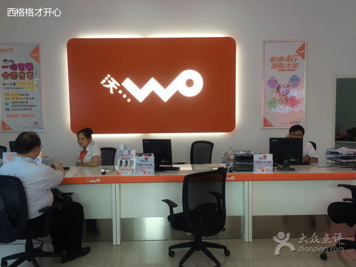

公司介绍
中国联合网络通信集团有限公司（简称“中国联通”）于2009年1月6日在原中国网通和原中国联通的基础上合并组建而成， 在国内31个省（自治区、直辖市）和境外多个国家和地区设有分支机构，是中国唯一一家在纽约、香港、上海三地同时上市的电信运营企业， 连续多年入选“世界500强企业”。中国联通主要经营GSM、WCDMA和FDD-LTE制式移动网络业务，固定通信业务，国内、国际通信设施服务业务， 卫星国际专线业务、数据通信业务、网络接入业务和各类电信增值业务，与通信信息业务相关的系统集成业务等。2009年1月6日，原中国联合通信 有限公司与原中国网络通信集团公司重组合并，新公司更名为中国联合网络通信集团有限公司。为与合并前的中国联通相区分，业界常以“新联通”进行称呼。 中国联通拥有覆盖全国、通达世界的通信网络，积极推进固定网络和移动网络的宽带化，为广大用户提供全方位、高品质信息通信服务。2009年1月，中国联通获 得了当今世界上技术最为成熟、应用最为广泛、产业链最为完善的WCDMA制式的3G牌照，拥有“沃3G/沃4G”、“沃派”、“沃家庭”等著名客户品牌。 2013年中国联通启动4G设备建网，采购了TD-LTE基站。中国联通宣布在2014年3月18日启动4G的正式商用。[1]2015年2月27日，中国联通正式获得世界上采用的国 家及地区最广泛的FDD-LTE牌照。[2]2016年6月，工信部批准联通在14省市内开展900MHz LTE FDD试验。[3] 8月，中国联通在"2016中国企业500强"中排名第46位。
联通通信 中国500强 红色的中国结
